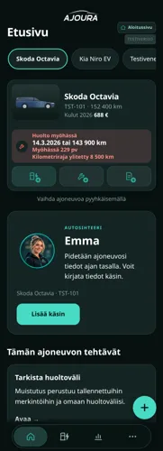
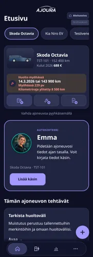
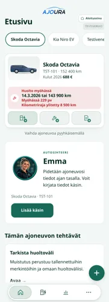
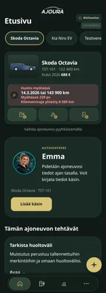

Kuva, teksti tai oma merkintä.
Täytä tankkaus kuitin, pumpun näytön tai matkamittarin kuvasta. Kirjoita tiedot tekstinä tai sanele tuetussa selaimessa. Käsin kirjaaminen on aina vaihtoehto.
AUTOSI ARKI, SELKEÄMPÄNÄ
Kirjaa. Seuraa. Ennakoi.
Tankkauksesta seuraavaan huoltoon. Ajoneuvosi merkinnät, kulut ja muistutukset yhdessä rauhallisessa näkymässä.
Perustoiminnot ilman tiliä. Tekoäly käytettävissä hyväksytyille testaajille.
2020 · 184 320 km
Oman huoltovälin mukaan: noin 1 800 km
Kuvitteellinen esimerkki · Tyylitelty malli
VÄHEMMÄN MUISTETTAVAA
Täytä tankkaus kuitin, pumpun näytön tai matkamittarin kuvasta. Kirjoita tiedot tekstinä tai sanele tuetussa selaimessa. Käsin kirjaaminen on aina vaihtoehto.
Tankkaukset, huollot ja korjaukset muodostavat ajoneuvosi historian. Tarkastele kuluja ja tulosta huoltohistoriaraportti auton myyntiä varten.
Seuraa omiin huoltoväleihisi perustuvia muistutuksia, katsastusarviota ja rengaskautta. Voit viedä muistutuksen puhelimesi kalenteriin.
Tekoälyn esitäyttö edellyttää kirjautumista, käyttöoikeutta ja jäljellä olevaa kiintiötä. Tarkistat tiedot ennen tallentamista. Sanelu käyttää selaimen Web Speech -puheentunnistusta, eikä toimi kaikissa selaimissa.
Rekisteritunnuksella tai käsin, yksi kerrallaan. Valitse malli ja väri, niin talli näyttää juuri sinun autosi. Yhden auton lisääminen vie noin minuutin.
Mitä tehtiin, milloin ja millä mittarilukemalla? Lyhyt merkintä riittää, ja vanhat huollot voi lisätä myöhemmin.
AJOURA arvioi seuraavan huollon ja katsastuksen ja muistuttaa rengaskaudesta. Koko historia löytyy auton aikajanalta.
SINUN TYYLISI
Valitse sovelluksen asetuksista Garage, Copilot, Nordic tai Journey. Hahmon voit valita teemasta riippumatta.




MITÄ SEURAAVAKSI
Ajouraa kehitetään vaiheittain. Suunnitteilla olevat ominaisuudet eivät ole vielä käytettävissä.
ESITTELYVIDEO · 0:46
Esittelyvideo näyttää nykyisiä toimintoja aiemmalla ulkoasulla.
AUTON MYYNTI
Ostaja kysyy aina saman: onko autoa huollettu? AJOURAssa vastaus on valmiina, kun olet kirjannut huollot sitä mukaa kuin ne tehdään.
Huollot, katsastukset ja korjaukset kilometreineen. Kuitin kuva jää merkinnän liitteeksi.
Raportista yksi painallus: ostaja avaa historian millä tahansa selaimella, ilman sovellusta. Kuvat ja muistiinpanot pysyvät puhelimessasi.
Omistajanvaihdoksessa siirtotiedosto vie koko historian kuitteineen uuden omistajan AJOURAan.
AJOURA APP / ENSIMMÄINEN KATSAUS
Avaa sovellus, lisää autosi ja kirjaa ensimmäinen merkintä. Se toimii heti selaimessa, eikä tiliä tarvita. Puhelimeen asennettuna AJOURA aukeaa omalla kuvakkeellaan kuin mikä tahansa sovellus.
Avaa sovellusAJOURAa voi jo käyttää omalla autolla: tiedot tallentuvat omaan puhelimeesi. Etsimme ensimmäisiä testaajia.
Kerro kokemuksesi sovelluksessa kohdasta Valikko → Anna palautetta.
TESTIVERSIO 1.22 / 2026LATAA SOVELLUS
Sovellus asennetaan suoraan selaimesta. Sovelluskauppaa tai tiliä ei tarvita, ja tiedot pysyvät omassa puhelimessasi.
Asennusohje avautuu puhelimellasi automaattisesti.
Asenna puhelimeenUSEIN KYSYTTYÄ
Kokeiluversio on maksuton. Hinnoittelusta kerrotaan ennen varsinaista julkaisua.
Tiedot tallentuvat omaan puhelimeesi tai tietokoneellesi. Jos kirjaudut sisään, autot ja merkinnät tallentuvat myös pilveen (EU) ja siirtyvät uuteen laitteeseen. Asenna sovellus kotivalikkoon ja ota välillä varmuuskopio: selain voi poistaa tiedot sivulta, jota ei ole käytetty pitkään aikaan.
Ei vielä. Rekisterihaku on tällä hetkellä esimerkkiaineistoon perustuva demo. Oikeaa hakua varten tarvitaan Traficomin lupa, ja sitä selvitetään.
Voit lisätä niin monta kuin haluat, myös moottoripyörät, veneet ja kelkat. Etusivu näyttää koko tallin ja jokaisen auton seuraavan huollon tai katsastuksen. Jokaisella autolla on oma aikajana, kulut ja raportti.
Ei tarvitse. Aloita mittarilukemasta ja viimeisimmästä huollosta ja katsastuksesta, niin muistutukset toimivat heti. Vanhempia merkintöjä voi lisätä myöhemmin, kun huoltokirja on käsillä.
Toimii. Ilman tiliä tiedot säilyvät käyttämässäsi selaimessa. Hyväksytyt testaajat voivat kirjautua ja synkronoida autot ja merkinnät pilveen. Kuvat ja kuitit jäävät laitteelle; ne voi siirtää varmuuskopiolla.
Saat. Auton raportin voi tulostaa tai tallentaa PDF-tiedostoksi ja antaa ostajalle.
Kyllä, varmuuskopiolla. Minä → Tallenna varmuuskopio tallentaa tiedot tiedostoon. Siirrä tiedosto uuteen puhelimeen ja valitse siellä Palauta varmuuskopio.
Avaa auto ja valitse Tankkauskirja. Kirjaa päivä, mittarilukema, litrat ja hinta. Kun tankkaat aina täyteen, AJOURA laskee keskikulutuksen ja ajon hinnan.
Lisää ohjeita on sovelluksessa kohdassa Valikko → Ohjeet ja kysymykset.
YHTEYSTIEDOT
Ajoura on Suomessa kehitettävä ajoneuvosovellus. Palvelu on testivaiheessa, eikä yritystä ole vielä perustettu.
Perustiedot tallentuvat laitteellesi. Kirjautuneen käyttäjän autot ja merkinnät synkronoidaan pilveen. Tekoälyn käyttö lähettää valitsemasi kuvan tai tekstin käsiteltäväksi. Lue tarkemmin tietosuojaselosteesta.